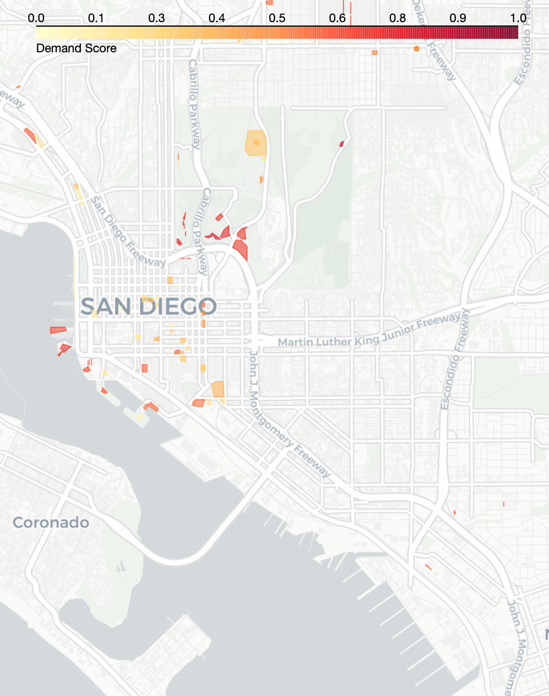
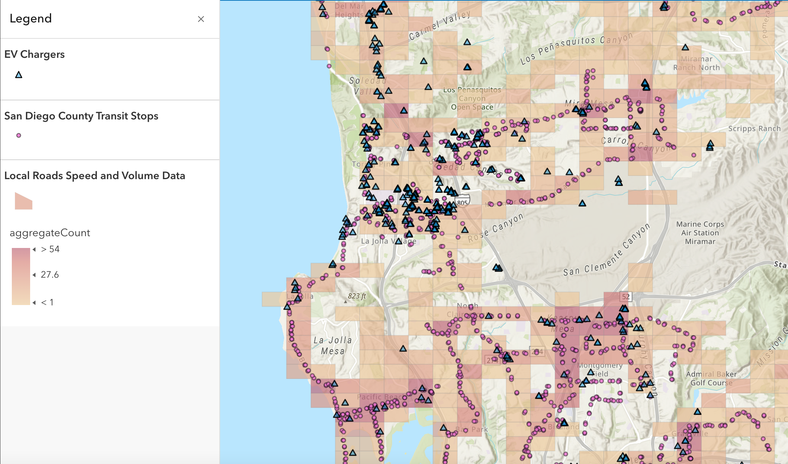

With the growing emphasis on clean transportation, the demand for electric vehicles (EVs) is increasing. However, there currently are not enough EV charging stations to meet this demand. Many of the existing chargers are concentrated in specific areas, leaving large parts of the city underserved. This imbalance can lead to equity issues, range anxiety, and congestion around existing chargers.
EVCS-OPTIM seeks to address these challenges while also optimizing placement to keep energy costs affordable for ratepayers. Our project uses data-driven methodologies, including geospatial analysis and optimization modeling, to find the most effective parking lot locations for new EV charging stations within San Diego County. By integrating previous EV adoption data, transit patterns, and proximity information, the project provides an interactive tool to assist San Diego Gas & Electric (SDG&E), which owns and operates thousands of EV charging stations across the region, in strategically expanding its EV infrastructure.

To develop this project, we first conducted a correlation analysis of various features to determine which factors should be included in our model. We analyzed features related to demographics, transit and traffic data, and the locations of existing chargers. Based on this analysis, we selected the following key features:
We then assigned weights to each feature based on its correlation with the locations of existing chargers. Features that we wanted to avoid, such as proximity to existing chargers, were given negative weights. For instance, the "distance to the nearest charger" and "number of chargers already at a parking lot" features received negative weights, as we aim to recommend parking lots that are farther from existing stations. On the other hand, features that likely indicate higher demand, such as "proximity to high-traffic areas," were given positive weights.
After assigning weights, we calculated a demand score for each parking lot. To standardize the scores, we applied min-max scaling, ensuring that all scores fell within the range of 0 to 1. We then employed two recommendation methods: